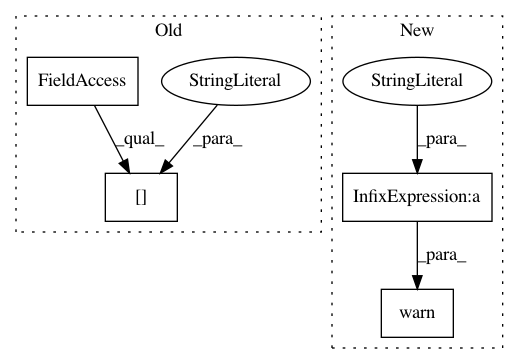

560cb94519ad5a5eed3adc323a9e1ad3cf0690e9,keras/callbacks.py,ModelCheckpoint,on_epoch_end,#ModelCheckpoint#Any#Any#,197
Before Change
self.best_val_loss = np.Inf
def on_epoch_end(self, epoch, logs={}):
if self.save_best_only and self.params["do_validation"]:
cur_val_loss = logs.get("val_loss")
self.val_loss.append(cur_val_loss)
if cur_val_loss < self.best_val_loss:
After Change
if self.save_best_only:
current = logs.get(self.monitor)
if current is None:
warnings.warn("Can save best model only with %s available, skipping." % (self.monitor), RuntimeWarning)
else:
if current < self.best:
if self.verbose > 0:
print("Epoch %05d: %s improved from %0.5f to %0.5f, saving model to %s"
In pattern: SUPERPATTERN
Frequency: 3
Non-data size: 4
Instances
Project Name: keras-team/keras
Commit Name: 560cb94519ad5a5eed3adc323a9e1ad3cf0690e9
Time: 2015-06-30
Author: francois.chollet@gmail.com
File Name: keras/callbacks.py
Class Name: ModelCheckpoint
Method Name: on_epoch_end
Project Name: keras-team/keras
Commit Name: 560cb94519ad5a5eed3adc323a9e1ad3cf0690e9
Time: 2015-06-30
Author: francois.chollet@gmail.com
File Name: keras/callbacks.py
Class Name: EarlyStopping
Method Name: on_epoch_end
Project Name: asappresearch/sru
Commit Name: bcc6cde62cdb19f0f4d23a2ca548d8e63fe683c5
Time: 2018-02-27
Author: taolei@csail.mit.edu
File Name: cuda_functional.py
Class Name: SRUCell
Method Name: set_bias